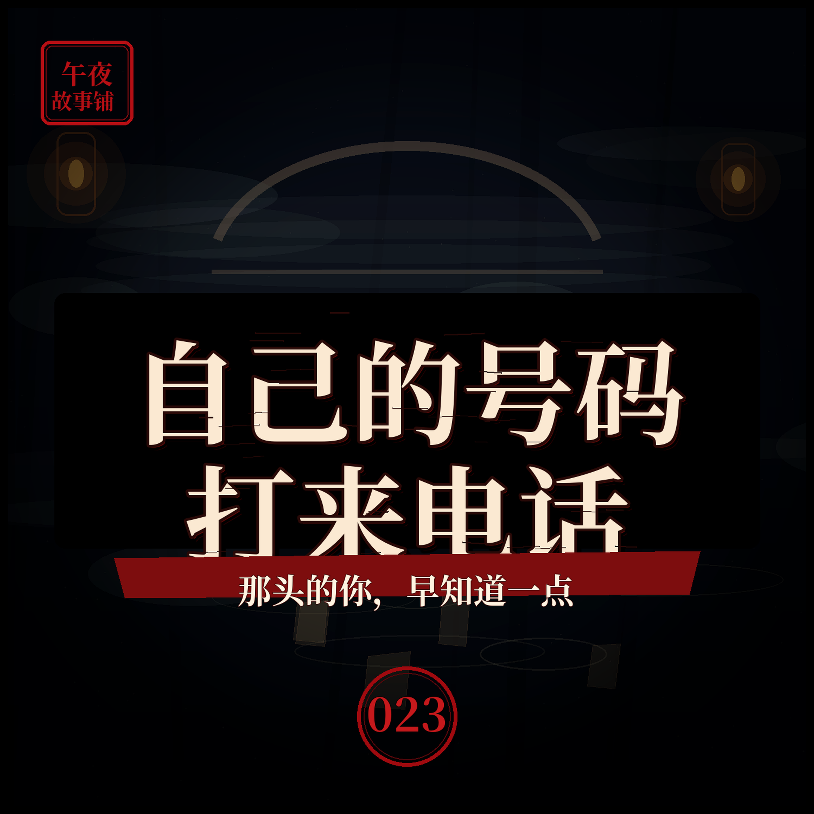

深夜接到自己号码打来的电话，那头也是我的声音
电话那头的你，比你早知道一点点

简介
凌晨三点，我的手机响了。来电显示，是我自己的号码。我接起来，那头传来的，是我自己的声音。他平静地告诉我，接下来一个小时会发生什么。起初我以为是恶作剧，直到他说的事，一件一件，真的应验了。他打来，不是为了吓我，是为了警告我——那最后一件事，我无论如何，都不能让它发生。本故事为原创虚构民间异闻演绎，请勿代入现实。
标签
- 民间故事
- 异闻
- 悬疑
- 怪谈
- 睡前故事
- 电话怪谈
电话那头的你，比你早知道一点点

凌晨三点，我的手机响了。来电显示，是我自己的号码。我接起来，那头传来的，是我自己的声音。他平静地告诉我，接下来一个小时会发生什么。起初我以为是恶作剧，直到他说的事，一件一件，真的应验了。他打来，不是为了吓我，是为了警告我——那最后一件事，我无论如何，都不能让它发生。本故事为原创虚构民间异闻演绎，请勿代入现实。